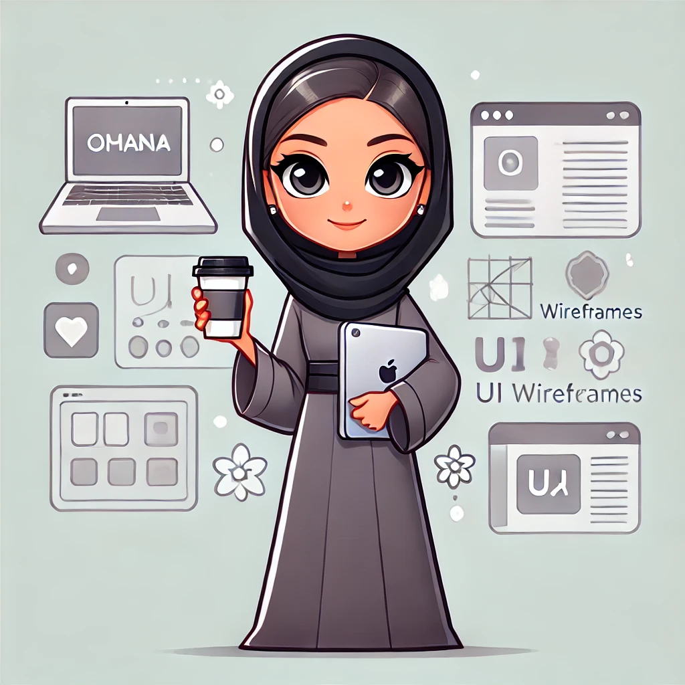

My Cv

Safa Al-Hussaini - UI UX Designer
Summary
UI/UX Designer and Technical Support Officer at the Youth Center, Sultanate of Oman.
Passionate about crafting seamless user experiences and intuitive digital designs.
Experienced in designing and developing web and mobile applications, particularly for non-profit and youth-focused initiatives.
Adept at integrating modern UI/UX principles with technical solutions, ensuring accessibility and engagement.
Education
-
Bachelor’s Degree in DA's – Middle East College, 2025.
-
Additional training or courses in UI/UX Design, Frontend Development, or related fields (if applicable)
Work Experience
Technical Support Officer & UI/UX Designer
Youth Center, Sultanate of Oman | May - 2024 – Present
-
Leading the UI/UX design for the Youth Center’s website and mobile applications.
Freelance UI/UX Designer & DeveloperSelf-Employed | 3 years
-
Designed OSA application, incorporating generative AI to teach sign language interactively.
-
Created multiple design systems for web and mobile applications, ensuring accessibility and responsiveness.
-
Developed UI/UX solutions for Wajhat Plus Website, focusing on a modern and user-centric interface.
Skills
- ✅ UI/UX Design (Wireframing, Prototyping, User Research)
- ✅ Design Tools: Figma, Adobe XD, Photoshop, Illustrator
- ✅ Frontend Development: Tailwind CSS, Laravel (Blade Components), Flutter (Dart)
- ✅ Web & App Design: Responsive Design, MVC Pattern, Accessibility Standards
- ✅ Technical Support & Integration (Youth Center & Ministry of Youth Projects)
- ✅ Team Collaboration & Project Management
Other